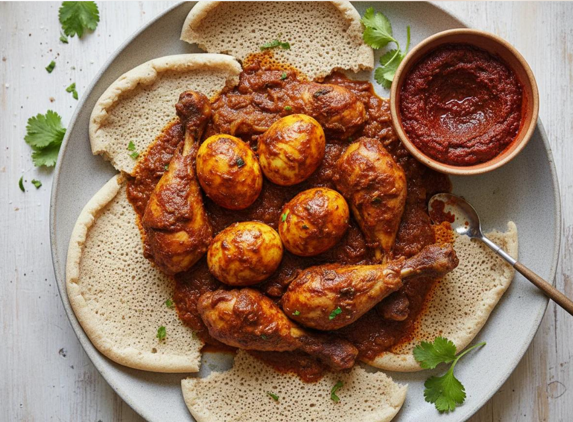

Injera with Doro Wat

Cultural background
Injera is a spongy, sour flatbread made from teff flour and used as plate and spoon. It is served with rich stews such as doro wat, spiced with berbere.
Ingredients
- 2 cups teff flour
- 3 cups water
- 1 tsp salt
- 1 kg chicken pieces
- 3 tbsp berbere spice
- 3 red onions, finely chopped
- 2 tbsp niter kibbeh (spiced butter)
- 4 boiled eggs
Cooking instructions
- Mix teff flour and water; ferment loosely covered for 2–3 days.
- Stir in salt and pour a thin spiral onto a hot non-stick pan.
- Cover for 2 minutes until bubbles appear; do not flip. Cool on a cloth.
- Slowly cook onions dry, add niter kibbeh and berbere, then chicken and water.
- Simmer 45 minutes, add boiled eggs and serve on injera.
Nutrition (per serving)
| Calories | Protein | Carbs | Fat |
|---|---|---|---|
| 410 kcal | 32 g | 38 g | 14 g |